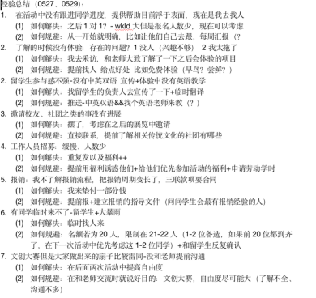
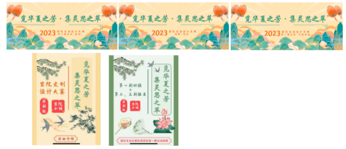
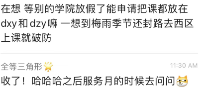
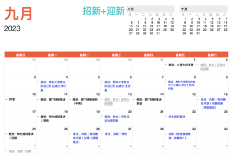

In high school, I not only gained knowledge but also achieved full development in various aspects such as morality, intelligence, and physical fitness. I was awarded the Outstanding Communist Youth League Member of Fudan University from 2020 to 2021. Also, I am selected for the school's 'Faith Mentor' program. Throughout the three years in high school, I served as a class monitor, the head of the Student Union's External Relations Department, the Director of Model United Nation Club vice-leader, and a student counselor. I actively participated in and organized a series of activities such as school culture festival, dance contest, the culture festival etc. I have been able to innovate on the basis of inheritance in various activities and incorporate new era elements, which has been recognized by teachers and classmates.
After entering university, I joined the Student Union Liaison Department and started learning from scratch about creating push notifications and designing cultural and creative peripherals. At the same time, I joined the Qingzhi team and participated in the Huzhou Volunteer Education Tour. In the summer semester, we independently planned and organized the "Seeking the Fragrance of Tradition · Gathering the Essence of Imagination" Competition.
I have great enthusiasm for student activities and I am very willing to spend much time organizing various activities. I have many ideas, thus I can provide many new activities and solutions for the student union. I have extensive experience in student union and student activities as I have been involved in this since junior high school. I have gained a more comprehensive and detailed understanding of my peers' concerns, potential difficulties that I may encounter during organizing activities and therefore I am confident to carry out my duty well. Most importantly, I am delighted and passionate about making the Student Union of the Secret Academy better.
在高中三年的学习生活中，我不仅增长了学识同时也锻炼了各项综合素质，在德、智、体等各方面得到了充分发展。我在政治上严格要求自己，被评为2020至2021年度复旦大学优秀共青团员。同时入选学校的“信仰导师”计划。在附中学习期间，我担任过班长、学生会外联部负责人、模联外联总监、学生小辅导员等各项工作。参与并组织了学校文化节、舞蹈大赛、班级文化节、游园会等一系列活动。在各项活动中我能够保持在传承的基础上进行创新，在各项活动中融入新时代元素，得到了老师和同学们的肯定。
进入大学之后，我加入了学生会联络部，从零开始学习制作推送和设计文创周边。同时，我加入了青志队，并参加了湖州支教行。在夏季学期，独立策划并组织了“觅华夏之芳，集灵思之萃”密院文创大赛活动。
我对学生活动有很大的热情。愿意在学习之余花较多时间组织各类活动。我的想法很多，可以为学生会提供很多新活动、新方案。并能在创新的同时做到对传统活动、文化的传承和发扬。我对学生会、学生活动有很丰富的经验。从初中就参与于此。在高中更是担任了对外联络部的部员和部长。我以不同的身份，更全面细致地了解同学关心的问题，在组织活动过程中可能遇到的问题等各项因素，从而可以更好地胜任工作。最重要的是，我希望能贡献我自己的一份力，把密院学生会办得更好。
The main purpose of inheritance is to standardize student work. The standardization here refers to neither patternization nor routinization, but rather to the ability to efficiently organize activities, reduce failures, and make students feel more involved in the activities.
The process of organizing activities: The specific implementation method for this is experience summary
It is necessary to summarize experience. For example, when encountering a temporary price increase during the ball this year, how to solve it and how to avoid it can be summarized by organizers and provided to future organizers for reference. Avoid such detours and similar problems, then the event will be better and better. The feasibility of this plan lies in the fact that large-scale events have similar processes and encounter similar problems.
There are two problems with this measure, and I have also proposed possible solutions respectively.
Firstly, it may limit students' imagination of the activity and causing the activities stick to the previous versions without any innovation and new ideas. This can be summarized through experience and submitted to the presidium, who will collect them and sort them. Then after students have finalized the planning plan, presidium will provide these files to the next class of students for reference.
Secondly, it will increase the workload of organizers and every organizer might write experience summary differently. The solution is to develop a rough plan (activity schedule - problem 1- how to solve 1- how to avoid 1- problem 2...)
example(written by me):
Improvement of publicity methods: online (unified style for the posts and subscriptions and joining in other social media)+offline
Enhance offline promotion
Because of the pandemic, most of the activities turned online, and most of the publicity methods were through subscriptions. However, the subscription of student union, JIers, has limited publicity, and some students do not often read or check the subscription. Therefore, enhancing offline promotion, such as sending small stickers and creating small interactions, is beneficial for promoting activities to more people.
The offline promotion methods include:
Posting posters in Longbin Building and dormitories.
This has also been implemented in large-scale events previously, such as dances and Girls' Day.
Combining promotion with stalling.
For example, when setting up a stall in a small shop, promote new activities and encourage every student who comes to donate to participate. It can not only enhance inter departmental linkage, but also increase the visibility of the event and attract more audiences.
Unified style of subscription
The specific measures include a similar style of cover and title, the same color scheme for each semester, and a unified font. The Communication design can design a template and a cover every month. The workload is small but it can work efficiently. Of course, if there is a better idea in publicity (for example, the Ministry of Arts and Culture has higher requirements for the posts), you can make these posts your own. Another idea is to have a unified color scheme for the posts in one term. (e.g. The current idea is that the autumn semester is blue, the spring semester is green, and the summer semester is yellow.)
example:
some advice for designing posts:
(you can see it in Chinese and in English in [Appendix.1.])
Restrictions of Members: concerning reducing the number of members, job rotation and their decisions of whether leave or stay after their freshman year
Reducing the number of people: control the number around 80
Member/Volunteer mobility: Provide department change channels at the end of each semester
Member/Volunteer retention: mid spring semester survey on volunteer retention intentions (leaving the following year/serving as an honorary department member/minister/chairman)
Innovation is to enhance the experience of all the members in the Student Union. We should pay attention to students’ participation and experience during our work. The significance of a student union is to establish new activities or make changes to some content of the activities, integrating students' own ideas and characteristics. It is also a way for all students to get involved in student work to have a greater sense of belonging and experience.
The main implementation methods include:
For those projects with low participation:
First, improve them then if it doesn’t work, combine those with similar theme. If both improvement and combination don’t work, delete them.
During the interview, ask the ministerial team to propose new ideas(or the activities they want to hold but fail to hold, if so, state the reason of the failure) and integrate them into an idea list
Regularly collect new ideas
The organizing and planning team will coordinate and arrange multiple teams (such as teams responsible for post and on-site teams) to perform their respective duties. Each group leader is a student with experience in this field, and group members can be students with zero foundation but are interested in this field. The benefits of doing so are:
The direction of new ideas
This can solve a problem with the current "free working group": some students do not participate because they cannot think of new activities, resulting in low participation and ineffective performance.
Inheritance：
Innovation:
Set a theme for each quarter:
For example, technical issues (e.g. course selection website, computer software and hardware issues), optimization of living environment (e.g. about dormitories or classrooms), and issues related to course settings such as Turkey Day. Provide targeted feedback every quarter
New position of internal communication department member: identifying problems and conducting research
example:
Inheritance:
Innovation:
Communication between colleges:
Invite clubs to introduce at the beginning of the semester
a. Why are they willing to come?
Give them a stage to showcase/sponsor - combine the unique features of the secret courtyard with the opening ceremony of the cultural festival)
Reasons for the current weak activities with clubs and other colleges:
Functional hedging
Integrated Media Center
Youth League Committee and other subordinate organizations
About timeline
Inheritance: Calendar+Mini Program
Calendar
example:
Mini program
b.Enrich the content
Improvement: Add English version, Buddy related content, and cultural exchange related content for international students (purpose/positioning: to enable freshmen and students from other colleges to understand the Secret School and the Secret School Student Union)
Innovation:
传承主要的目的是规范化学生工作。这里的规范化不是指模式化、套路化，而是能高效地举办活动、减少失败，并让同学在活动中更有参与感。
办活动的流程：这个的具体实现方式是经验总结。
经验总结是有必要的。比如今年舞会时遇到临时抬价的事情，如何解决，如何规避，可以由相关同学总结并给之后的组织者查阅，少走弯路，活动越办越好。这个方案的可行之处在于，大型的活动流程相似，遇到的问题也会很相似。
这个措施存在两个问题，我也提出了可能的解决方案：第一，可能会限制同学对活动的设想，使活动循规蹈矩。这可以通过经验总结交给主席团整理，在下一届同学定好策划案之后再给他们参考。第二，会加大同学工作量，同时每个人写出来的都不太一样。改进措施是制定一个大致的方案（活动日程-问题1-如何解决1-如何规避1-问题2……）
实践：
宣传模式：线上(宣传公众号风格统一+加入新的社交媒体)+线下
增强线下宣传
由于之前疫情封控的原因，活动大多转为线上，宣传方式大多是公众号推送。但是JIers的宣传面有限，有些同学不常看公众号。因此，增强线下宣传有益于想更多人宣传活动。（发发小贴纸、做做小互动）
线下的宣传方式有：第一张贴海报，在龙宾楼里和宿舍楼里张贴海报。这点在之前的大型活动，比如舞会、女生节等活动也实行过。第二，在线下的摆摊的同时进行宣传。比如在小铺摆摊时宣传新的活动，并鼓励每一个来捐赠的同学参加。既能增强部际联动，也能提高活动知名度，吸引更多受众。
公众号风格统一
具体措施有封面+标题风格相似，每个学期色系相同，统一字体。可以每个月让传媒设计一个模版+封面，工作量不大但是可以统一风格，当然如果宣传方面有更好的想法（比如文艺部对推送美工要求更高），可以按照自己的来。同时推文最好统一色系。目前的想法是，秋季学期是蓝色、春季学期是绿色、夏季学期是黄色。
实践：
人员规范和限制：精简人数、人员流动、人员去留
精简人数：控制在80人左右
人员流动：学期末提供换部门通道
人员去留：春季学期中期调查志愿者去留意向（在下一年离开/担任荣誉部员/担任部长/担任主席）
创新是为了提高志愿者和部长团的体验感。学生工作并非仅仅工作，更多的应该是学生参与、体验。创办新活动、或者对活动的部分内容进行改变，融入学生自己的想法和特色，才是学生会的意义所在，也是能让所有参与学生工作的同学有更多获得感、归属感、体验感的方式。
主要的实施方式有：
对一些参与度较低的项目 1.改进 2.合并 3.删除
面试期间就让部长团提出新想法，收集成idea list
不定期征集新想法
策划组统筹安排，下面分设多个小组（比如推送组和现场组），各司其职。每个小组组长是有这方面经验的同学，组员可以是零基础但对此方面感兴趣的同学
这样做的好处有：
新想法的去向
这能解决目前“自由工作组”存在的一个问题：有些同学因为想不出新活动而没有参与，导致参与度较低，效果无法体现。
传承:
创新:
每个季度设定主题：
比如技术问题（e.g.选课网、电脑软件和硬件问题），比如生活环境优化（e.g.宿舍？教室？）比如火鸡节就是和课程设置相关的问题。每季度给个有针对性的feedback
内联部部员的新职务：发现问题并调研
example:
传承:
创新:
学院之间的联络：
在开学一开始邀请社团来介绍
（他们为什么愿意来？
给他们一个展示的舞台/给赞助-密院特色e.g和文化节开幕式结合）
【和社团和别的学院的活动目前不强的原因： 1）我们学院体系完善，也因此较为封闭; 三学期制，放假时间差距大】
职能对冲
融媒体中心
团委及其其他下属组织
关于timeline
传承：年历+小程序
年历
实践:
小程序
丰富内容
改进：加入英文版、加入buddy相关内容/和留学生文化交流相关内容（目的/定位：让大一新生和别的学院的同学了解密院、密院学生会）
创新: